The first week of the Bio & Agri Zero revolved mainly around the Biology part of the course’s title. After we were introduced to Nuria and Jonathan, we began discussing Biology basics, following Nuria’s presentation which catered to an audience with a design background. She defined this approach as a form of “consilience”, where she merges two different practices together, Design and Science. From theoretical concepts to practical applications, we had a well-rounded approach to what can seem like a very intimidating subject.
The idea behind Bio Zero was to start from nothing. In fact, Nuria presented us with the various “Major Transitions” in science, going through different scales and practices. From quantum mechanics, to thousands of years of evolution, her graph looked something like this:
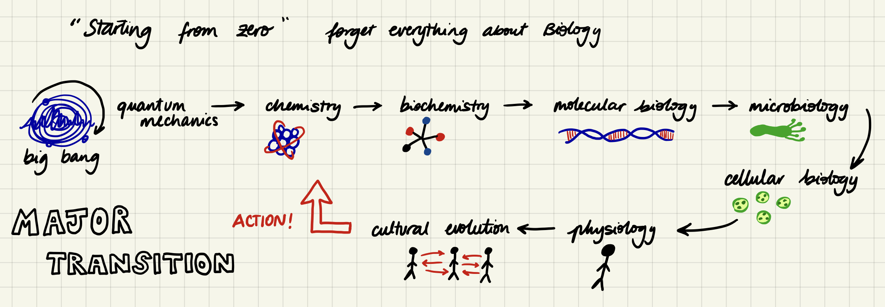
She would introduce basic concepts that could be useful for our future projects, especially those interested in Biomaterials or Synthetic Biology, like me. I was extremely excited to participate in this course, and wondered what I would learn, what would sound familiar and what would be totally new. I began to recognise vague concepts which still lingered in my brain from highschool, but were in a completely different language. As I took my notes, my brain pronounced the words with a french accent, reminiscent of when I was doing Biology in french. Mitochondria, Nucleotides, Secondary amino acid chains, Catabolism and the Scientific method all woke up from their hibernation in the back of my brain’s file cabinets. Many new concepts were introduced, such as the complicated Metabolic processes and the millions of different microorganisms shapes and functions.
We talked about planetary wellbeing, as well as different problems we are facing nowadays. As our population is growing exponentially, we are beginning to realise that a Western lifestyle cannot be sustained, especially if applied all around the world. Even as it is, we deplete the earth’s resources in less time than what it takes to replenish them. We risk exhausting elements such as lithium and phosphorus, our waterways are being contaminated by microplastics and hormones, planned obsolescence is leading us to over consume and the large waves of climate refugees are unspoken of.
We discussed the hidden impact behind certain products or behaviours and suggested that the mindset of “think locally, talk globally” may be a way of creating more conscious communities. A lot of these problems seemed so vast and I felt so powerless in front of them. However, I learned that Evolution is the process of Nature’s optimised design and that there is always selective pressure that forces this design to perfect itself. As designers, engineers and conscious consumers, we are facing the pressure to create better products, build better technologies, and make better choices. That is all also part of my mission.
When it came to the practical part of the lesson, we began experimenting with various environments in which to grow bacteria or fungi. We prepared special mediums aimed to cultivate certain types of microorganisms, whether it be lactobacillus or the mysterious creatures growing in the university microwave. My three samples were: the puddle in the IAAC bike storage area and my scalp (both puth to grow in the “all purpose” medium) and the inner corner of my eye, which I placed in the Lactobacillus petri dish.
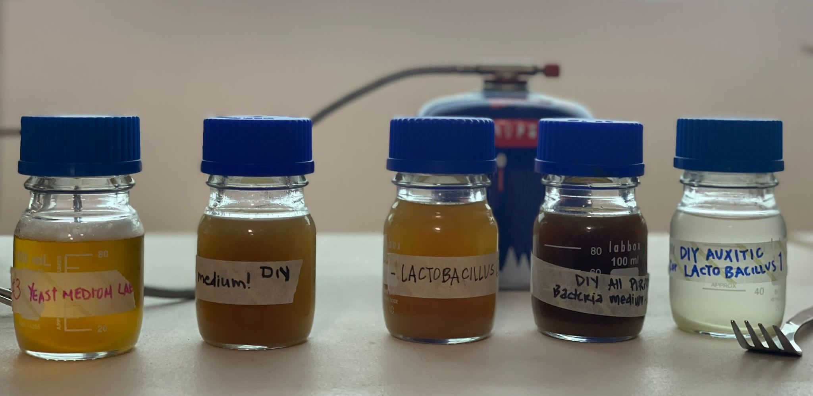
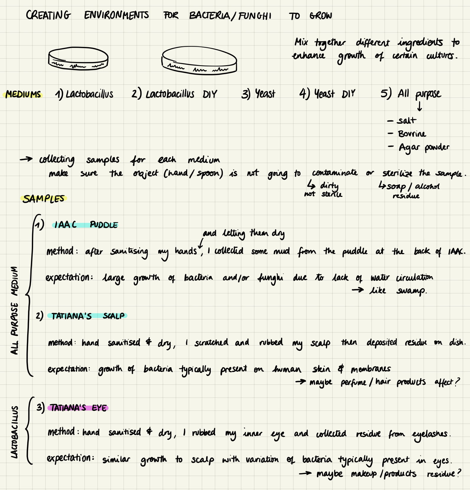
The mediums we used and the samples I chose.
On Thursday, we got to use the microscopes. There were three types; the kind we could attach to our phone (x6 magnification), the kind we could attach to our computer (x50-100 magnification) and the ones Nuria brought from her lab. We analyzed and observed all sorts of materials, and these were the best photos I took:
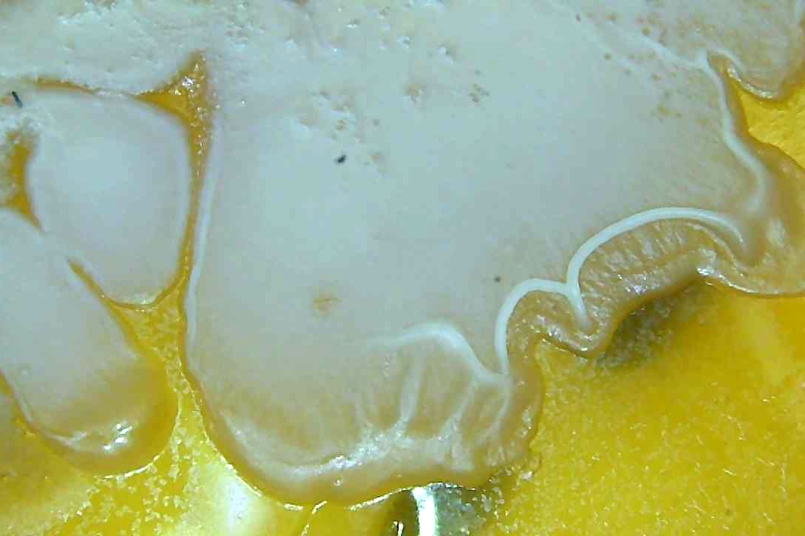
Puddle sample
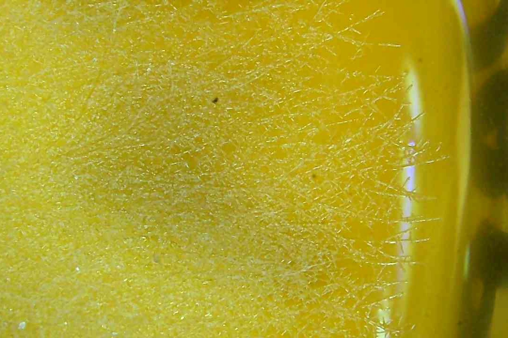
My scalp sample
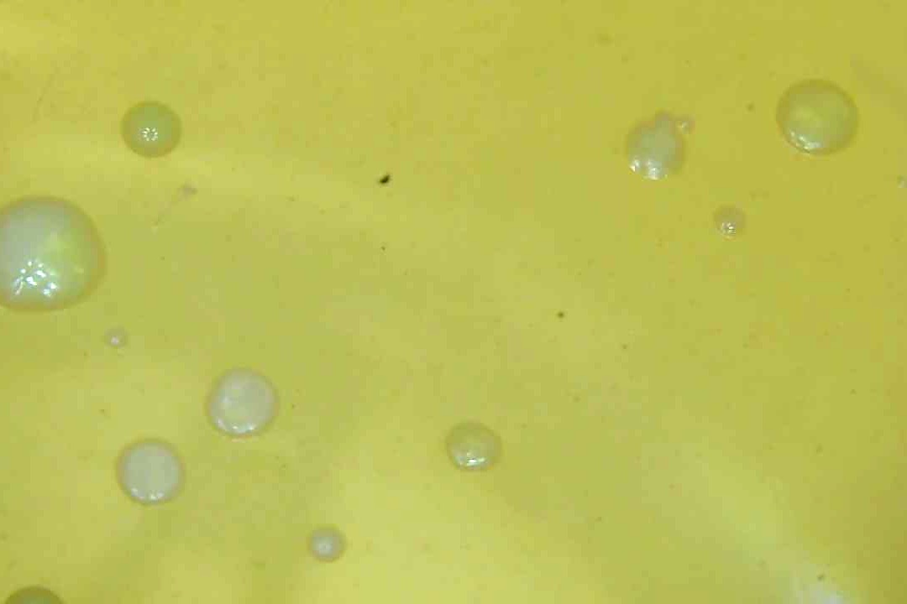
My tearduct sample
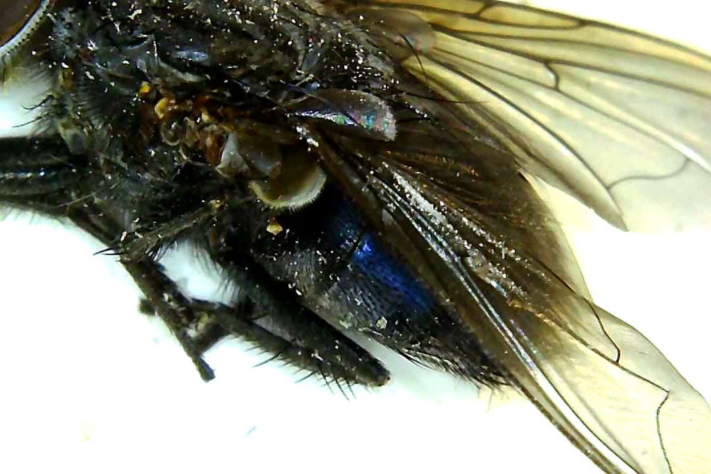
Close-up of a fly
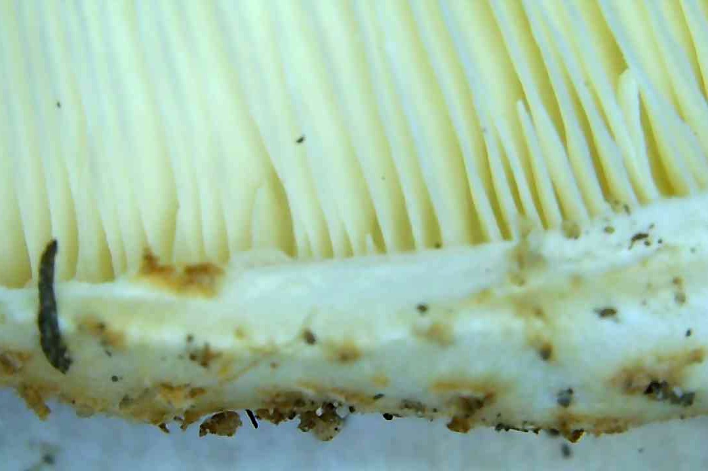
Close-up of a mushroom
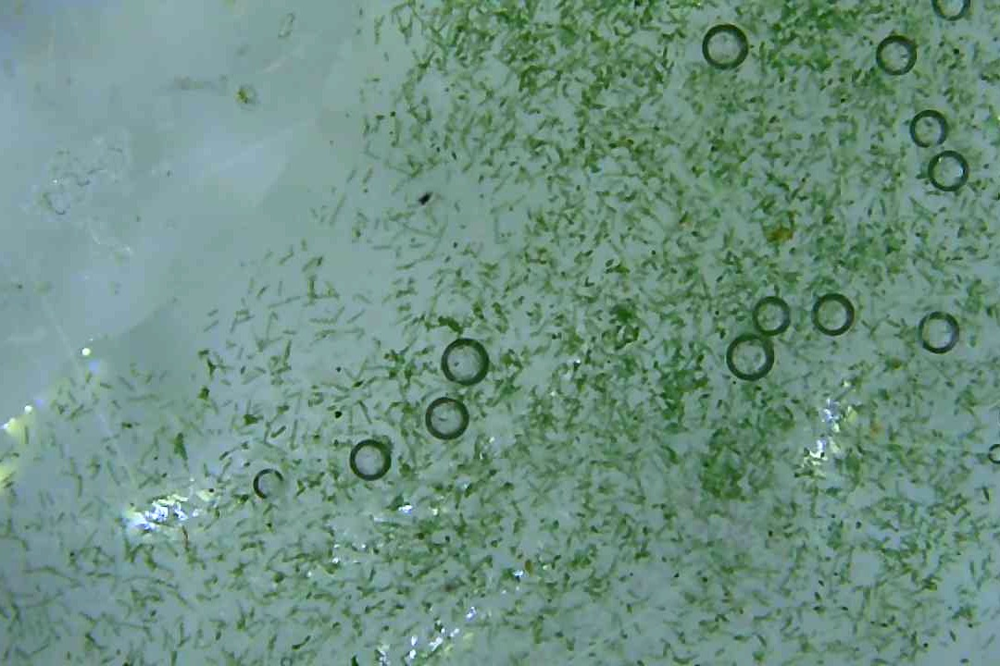
Spirulina
Close up of flower
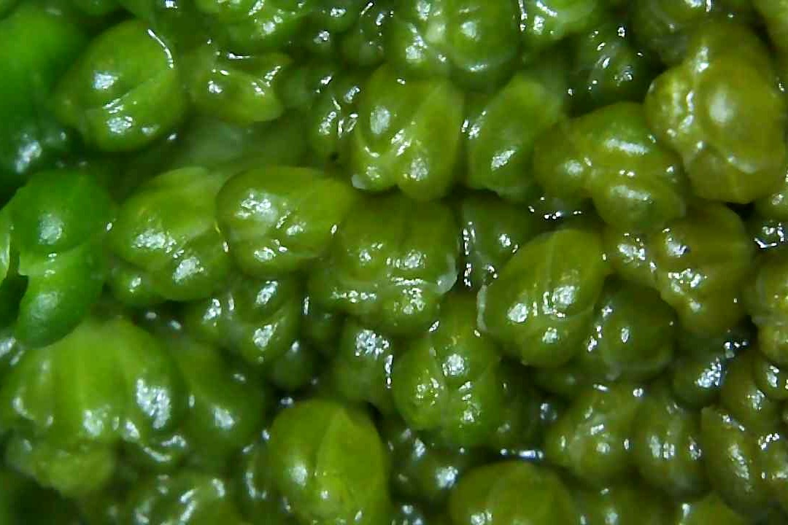
Close up of broccoli
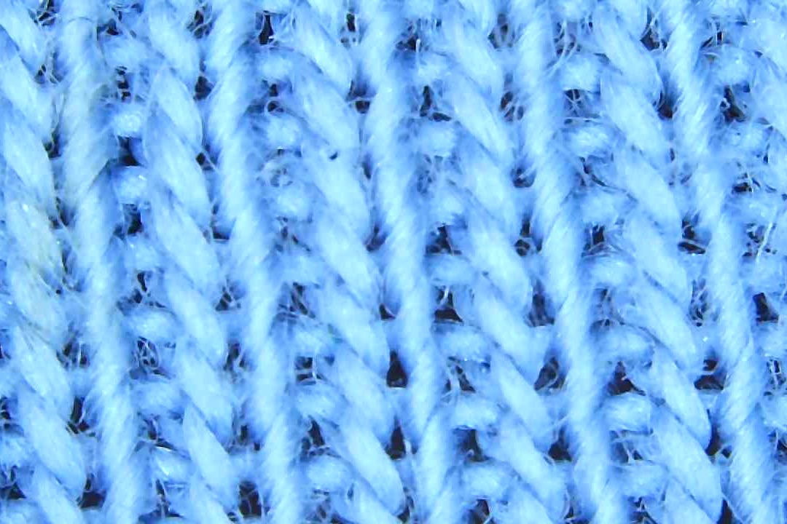
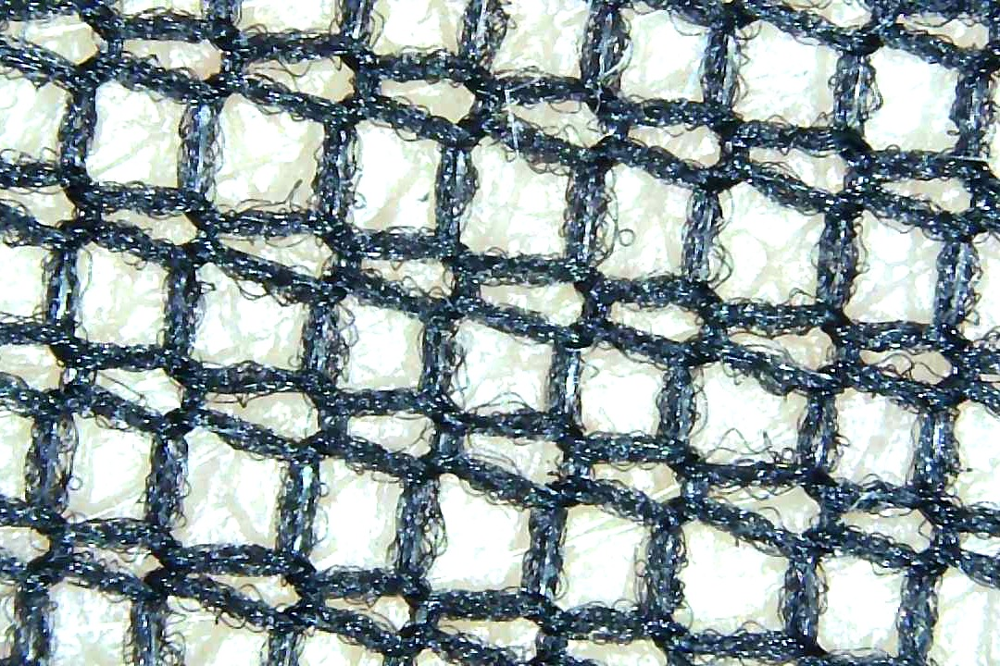
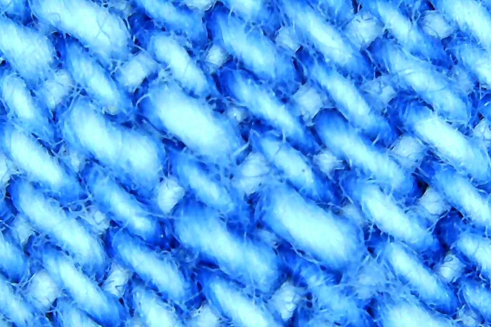
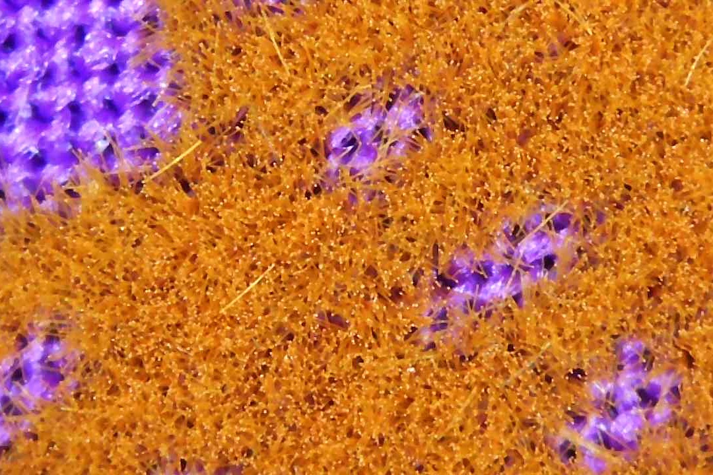
Various fabrics
Friday’s lesson started with a preview of what Agro Zero will look like next week, because Nuria was unable to attend the lesson. I will write about Agro Zero next week, once we have completed the seminar. Friday concluded with a lovely idea suggested by Jose: a MDEF collective lunch at the Mariposa park. Everybody had to bring a dish which provoked happiness, and together we ate and shared food memories over a big colourful table. What a great way to start the weekend!